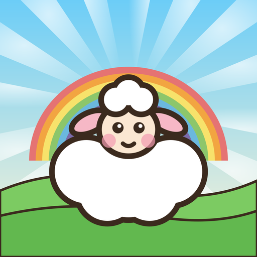

하하하 바이블 탐험앱을 쓰다가 궁금한 점이나 문제가 있으면 이메일로 알려 주세요. 기기 종류(아이폰, 아이패드, 안드로이드)와 운영체제 버전, 어느 이야기의 어디쯤이었는지 적어 주시면 더 빨리 도와드릴 수 있어요.
이야기는 성경 순서대로 열려요. 앞 이야기를 끝까지 보면 다음 이야기가 열려요. 끝낸 이야기는 언제든 다시 할 수 있어요.
아니요. 진행 상황은 기기에 자동으로 저장돼요. 바이블 맵에서 그 이야기를 누르면 "이어서 하기"로 계속할 수 있어요.
오른쪽 위의 지도 버튼을 누르세요. 지금까지 한 것은 저장돼요.
이야기 속에서 한 번 해 본 액션 게임은 바이블 맵에서 그 이야기를 누르면 "액션 게임" 목록에 열려 있어요. 이야기를 처음부터 하지 않고 게임만 다시 할 수 있고, 최고 기록도 남아요.
이야기를 끝까지 보면 성경 퀴즈가 나와요. 끝낸 이야기를 바이블 맵에서 누르면 "성경 퀴즈 다시 풀기"로 몇 번이든 다시 풀 수 있고, 가장 많이 받은 별이 남아요.
오른쪽 위의 스피커 버튼을 누르면 모든 소리, 배경음악, 효과음, 목소리를 하나씩 끄고 켤 수 있어요. 바이블 맵의 "부모님 · 선생님" 화면에서도 바꿀 수 있어요.
바이블 맵 아래의 "부모님 · 선생님" 버튼 → 어른 확인 → "처음부터 다시 하기"를 누르세요. 모든 진행과 말씀 카드, 퀴즈 별과 게임 기록이 지워져요.
말씀 카드는 개역한글을 쓰고, 대사는 어린이가 이해하기 쉽게 풀어 썼어요. 하나님의 말씀에는 근거가 되는 성경 위치를 함께 보여 줘요.
아니요. 모든 내용이 앱 안에 들어 있어서 인터넷 없이도 할 수 있어요.
시즌 1에서 창세기 26개 이야기(천지창조부터 요셉까지)를 모두 만들었어요. 지금은 시즌 2 · 출애굽과 광야(모세 이야기)를 준비하고 있어요.